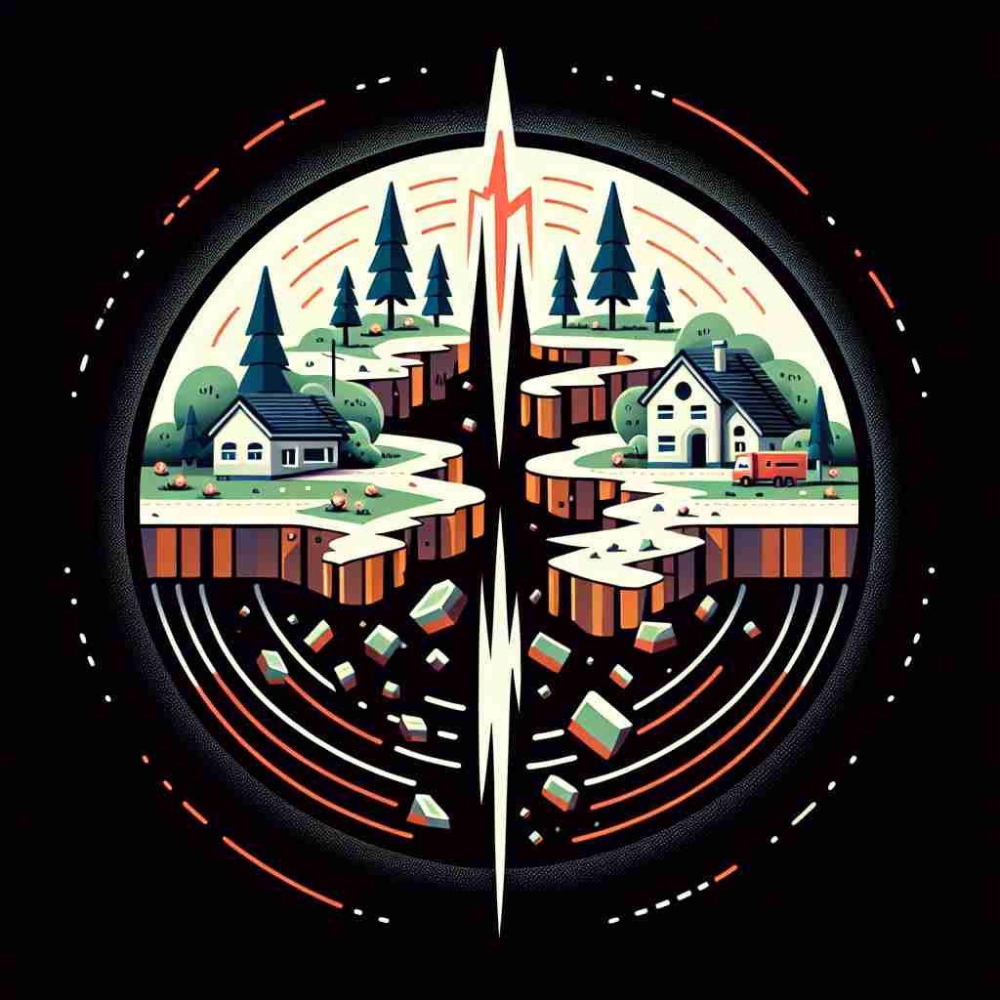

💬 The city is on alert for an earthquake warning. 该城市已对地震警报保持警惕。

💬 People can experience an earthquake that shakes their homes. 人们可以经历一场震动他们家园的地震。
💬 The city is on alert for an earthquake warning. 该城市已对地震警报保持警惕。
💬 People can experience an earthquake that shakes their homes. 人们可以经历一场震动他们家园的地震。
🧠 想象地球（earth）在摇晃（quake）。这个核心概念贯穿了'earthquake'的所有含义。无论是字面上的地面震动，还是比喻性的重大变革或剧烈影响，都可以联想到地震那种突然、强烈的震动感。这种联想可以帮助你更容易理解和记忆'earthquake'的各种用法。
🔈 ['ɜːθkweɪk]
🗝️ n. a sudden, violent shaking of the ground 地面的一次突发剧烈震动
🎭 在一个宁静的早晨，小镇的居民正在享受早餐。突然，地面开始剧烈摇晃，家具四处颠簸，窗户发出嘎吱的声音，街道上传来尖叫声。这场地震的突如其来让所有人措手不及。
💬 The earthquake destroyed many buildings in the city. 地震摧毁了城市中的许多建筑。
🌳 由词根 "earth"（地球）和词根 "quake"（震动）组成，表示 "地震"，即地球的震动。
💡 记住 "earthquake" 可以联想到 "地球的震动"，通过将 "earth" 和 "quake" 的概念结合在一起，形象地理解这个单词的意思。
🗝️ n. a major disruption or upheaval 重大动荡或剧变
🎭 在一个大型科技公司，一位备受尊敬的CEO突然宣布辞职，引发了内部的巨大动荡。员工们感到震惊和不安，开始讨论公司未来的走向。这个意外的决定就像一场地震，打破了公司的和平状态。
💬 The scandal caused an earthquake in the political landscape. 丑闻在政治格局中引发了一场地震。
🤔 比喻性用法，类比地震的剧烈影响
🗝️ n. a sudden, dramatic change 突然而剧烈的变化
🎭 在政治会议上，新政策的公布引起了全场的哗然。这一激进的改革方案意味着国家将迎来彻底的变革，就像是一场政治地震，让所有人都意识到即将发生的变化。
💬 The new technology created an earthquake in the industry. 这项新技术在行业内掀起了革命。
🤔 延伸自地震带来的突然变化